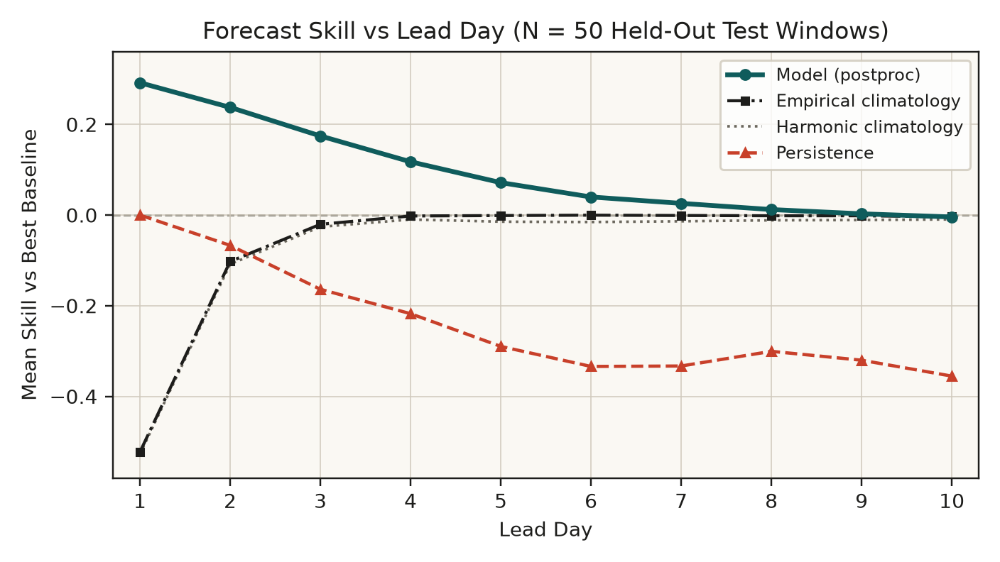
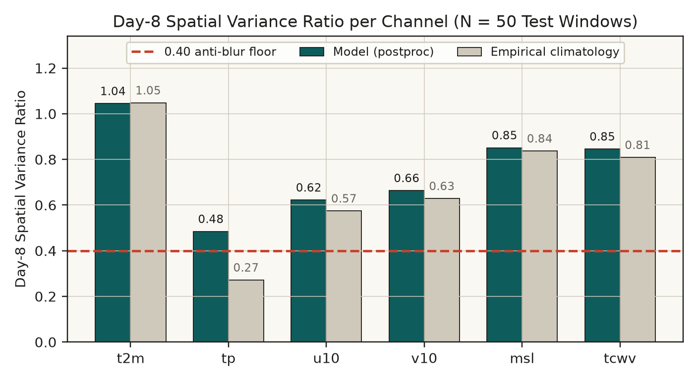

Counterfactual Climate Digital Twin · 32×36 @ 1° (6.5°–37.5°N, 65.5°–100.5°E) · CPU Surrogate
Project Goal & USP: Given 3 days of atmospheric state (t2m, tp, u10, v10, msl, tcwv), Multiverse of Monsoon rolls out calibrated 1–60 day baseline forecasts (Prime) alongside localized counterfactual experiments (Multiverse) in <180 ms on CPU. Its core design enforces a hard 3-cell per-step receptive radius, separates forecast-uncertainty shrinkage from V1 causal shock dynamics, and links rollouts live to land impact proxies in a 3D Swiss-cartography observatory UI.
4. Multiverse & ImpactV1 unshrunk diff · causal cone 4σ cap → 736-cell land proxies
1. Modeling Approach
Anomaly Formulation: Subtracting a train-fitted 4-harmonic seasonal cycle isolates synoptic departures from seasonal climatology; precipitation uses log1p/expm1.
Strictly Local Operator:MonsoonNet takes cin=34 features (3-day history, day-to-day tendency, climatology, static land_sea_mask & orography, sin/cos DOY) through a 3×3 stem, two depthwise-separable residual blocks (C=128), replicate padding, and per-pixel LN2d. Zero global pooling enforces a hard 3-cell Chebyshev radius per step.
Damped Persistence & Event Head: Predicts a_{t+1} = sigmoid(ρ)·a_t + scale·head(h) plus a heavy-rain (≥10 mm/d) logit head.
2. Stability, Anti-Blur & Shocks
Two-Stage Training: Stage A (25 epochs, Huber + 0.2 BCE + 0.05 GradDiff, EMA) stabilizes 1-day dynamics; Stage B unrolls multi-step BPTT (K=2×3, K=4×4, K=8×4) with ±5σ anomaly clamps to prevent multi-week drift.
Blur Prevention: Validation-fitted out-of-loop beta shrinkage curbs error growth, while kappa debiasing, tp pattern gain (g8=1.4), and event-head blending keep day-8 variance ratios above 0.40.
V1 Counterfactual Serving: Prime keeps beta shrinkage; shocked runs extract pert_nb − ctrl_nb without beta attenuation, gate propagation with a causal cone (speed=3.0 cells/d, taper=1.5), and cap responses at ±4σ. Exact zero shocks return Prime identically.
3. System Implementation & Offline Architecture
Offline Inference API (serve.py): Self-contained FastAPI server loading bundled weights from weights/ (model.pt, postproc.json, clim_harmonics.npz, norm.npz, static.npz) on startup with warmup, thread-safe lock, strict 400 validation, POST /health, and POST /simulate. Runs offline on 4 CPU threads without writing to disk.
Observatory Dashboard (dashboard/): Separate FastAPI proxy + dependency-free vanilla HTML/CSS/JS frontend with smooth marching-squares coastlines, 360×320 Lambertian 3D relief maps, synchronized crosshairs, drag-to-draw custom shocks, and live monsoon/impact.py land proxies.

Test Skill Trajectory: Positive skill above persistence and climatology across leads 1–9 (+0.3050 D1, +0.1248 D4, +0.0154 D8) before converging near climatology by day 10.

Anti-Blur Check (Day 8): Spatial variance ratio stays above the 0.40 floor across all 6 channels (tp = 0.4846 vs empirical climatology 0.2718).
Key Outcomes, Live Counterfactual Explorer & Limits
50 Unseen Test Windows · 96 De-Duplicated Shock Windows · Live Dashboard Verification
4. Quantitative Benchmark Outcomes (Unseen Test Split, N = 50 Windows)
Lead
Method
t2m (K)
tp (mm/d)
u10 (m/s)
v10 (m/s)
msl (Pa)
tcwv (kg/m²)
Mean Skill
CSI ≥10mm
Day 1
Best Baseline (Persistence)
1.0669
5.5995
1.0470
1.0688
214.59
3.7993
+0.0000
0.3939
Day 1
MonsoonNet (C=128 + postproc)
0.7075
4.1760
0.7772
0.7558
143.71
2.4388
+0.3050
0.5166
Day 4
Best Baseline (Empirical Clim.)
1.8447
7.2272
1.6122
1.4963
286.10
7.0727
-0.0020
0.2848
Day 4
MonsoonNet (C=128 + postproc)
1.4807
6.8801
1.3958
1.3479
266.12
5.5892
+0.1248
0.3924
Day 8
Best Baseline (Empirical Clim.)
1.9318
8.8115
1.7954
1.5766
323.45
7.2669
-0.0015
0.2995
Day 8
MonsoonNet (C=128 + postproc)
1.8638
8.9220
1.7523
1.5647
318.95
7.0268
+0.0154
0.3494
Stability & Causality: Across 300 30-step rollouts (incl. 200 1σ noisy starts): 0 NaN/Inf, min tp = 0.0, t2m ∈ [-32.76, +43.33] °C, ±5σ clamp hits <0.004%. Across 96 shock windows: warm_ocean passes all checks 100.0% (96/96); null is exact 0.0; monsoon_stall passes localized/no_teleport/stable 100% and propagates 45.8% (44/96).
Interactive Shocks: Smooth climatology DOY init, drag-and-drop .npz/.json state upload, presets, or drag-to-draw custom circle/rect perturbations directly on the map.
Trajectories & Export: Synchronized crosshairs, domain-mean SVG plots (all vs land), PNG/CSV/JSON export, 5-run history, and live plain-English impact summary.
5. Counterfactual Spatial Evolution
warm_ocean rollout (t=6027, DOY=184): Bay of Bengal warming decays from +2.11 K (D1) to +0.46 K (D10) as convective rainfall peaks (+13.67 mm/d) and spreads inside the causal cone.
6. Live Land Impact Proxies (/api/run, DOY 166)
Scenario (10 days, 736 land cells)
Prime → Multiverse
warm_bay_of_bengal
Deficit 31.79%→38.32% · CSI 0.1154→0.1377
Custom Land (22°N,78°E, r=8, +6K)
Heatwave 0→34 cell-d · CSI 0.1154→0.1373
Near-box (≤3 cells) t2m Δ energy drops from 1.0000 (D1) to 0.4556 (D10) as energy disperses.
Key Limitations & Responsible Use: Skill decays near climatology by day 8 (+0.0154), extreme tails and cyclone tracks are smoothed at 1° daily resolution, weak Arabian Sea winds damp -40% stall shocks (45.8% propagate rate), out-of-archive future years may score lower, and impact.py outputs are experimental surrogate indices rather than operational advisories.